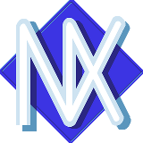
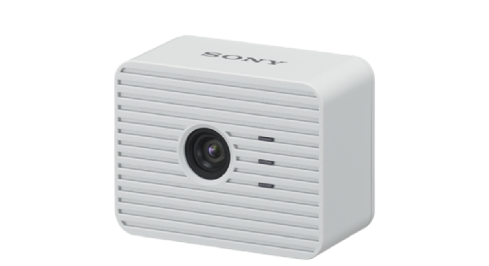
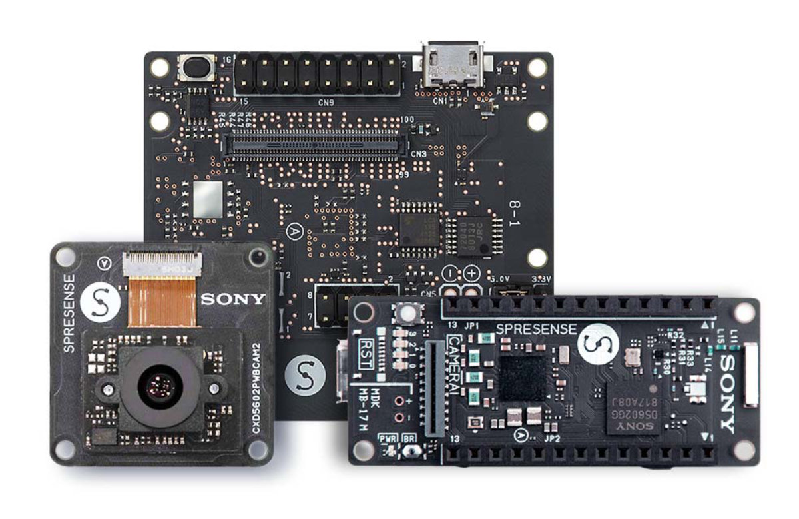
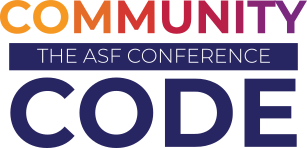
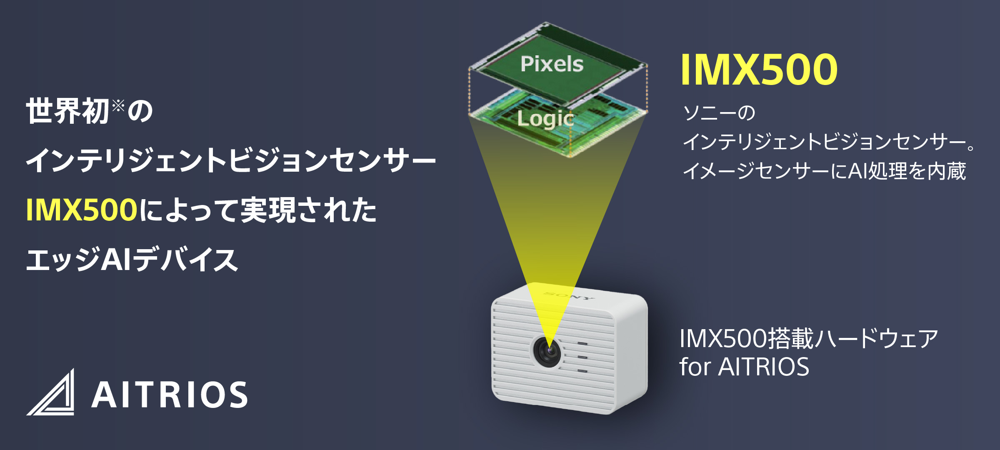
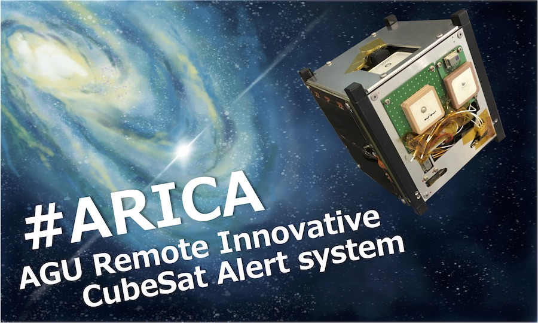

A WireGuard VPN implementation for Apache NuttX, exposed as a wg0 network device.
ESP32-S3TUNNEL UP OVER REAL WI-FI
SPRESENSETUNNEL UP OVER REAL WI-FI (GS2200M)
Real WireGuard peersLINUX KERNEL, WINDOWS CLIENT
NuttX 12.7.0 and masterSAME SOURCE, BOTH VERIFIED ON HARDWARE
Satoru Akita / Sony Semiconductor Solutions

Apache NuttX

AITRIOS edge AI device (ESP32)

SPRESENSE
1 / 9
Today I will talk about WireGuard for Apache NuttX.
||
It is a WireGuard VPN implementation for Apache NuttX, exposed as a wg0 network device. On ESP32-S3 and on SPRESENSE with the iS110B Wi-Fi add-on, the tunnel is up over real Wi-Fi: telnet and a web server through the tunnel on both boards, and the same source builds and runs on NuttX 12.7.0 and on master.
||
The peers are always real WireGuard implementations: the Linux kernel module and the official Windows client. Interoperating with another copy of this code would prove nothing.
Summary
This project implements WireGuard as a NuttX network device.
What it is
A modern, lightweight VPN protocol, originally developed for Linux.
Who made it
Jason A. Donenfeld, an independent security researcher. First released in 2016; in the Linux kernel since 5.6 (2020).
How it protects traffic
Encrypted tunnels over UDP: Curve25519, ChaCha20-Poly1305, BLAKE2s.
Where you have met it
Tailscale is built on WireGuard. Roughly 4,000 lines — small enough for a microcontroller.
2 / 9
First, what this repository actually contains.
||
WireGuard is a modern, lightweight VPN protocol originally developed for Linux, and increasingly adopted in embedded and IoT systems. It establishes encrypted tunnels over UDP using Curve25519, ChaCha20-Poly1305 and BLAKE2s, while keeping the implementation small enough, roughly 4,000 lines, to run on microcontrollers.
||
It is newer than people often assume, and it is not a big-company project. Jason A. Donenfeld, an independent security researcher, started it in 2015 and released it in 2016; it spent four years as an out-of-tree module before being merged into the Linux kernel in 5.6, in March 2020. If you use Tailscale, you are already using WireGuard — Tailscale is built on it.
||
Apache NuttX is a POSIX-compliant RTOS with its own TCP/IP stack and BSD socket interface, but it currently has no VPN capability. This project implements WireGuard as a NuttX network device called wg0, so that applications see it as a normal network interface. The encrypted transport underneath is a UDP socket on port 51820, and the peer on the other end can be any existing WireGuard endpoint.
The ASF and Community Over Code
Apache NuttX is an ASF project.
“Exists to provide software for the public good.”
A 501(c)(3) nonprofit organization, founded in 1999.
“Run almost exclusively by volunteers that provide support for hundreds of projects.”
Maintains the Apache License 2.0. Its way of working is “The Apache Way” — community over code.

“The official conference of the Apache Software Foundation (ASF), bringing together the communities behind Apache open source projects.”
An annual series for developers, users, contributors, and committers working on ASF projects.
Glasgow: October 11–14, 2026. Sydney: November 18–19.
The NuttX International Workshop is co-located with Glasgow 2026.
That is where this work is presented, and apache/nuttx-apps is where the code is to be merged.
A little about where this is going.
||
The Apache Software Foundation is a 501(c)(3) nonprofit organization, founded in 1999, and it exists to provide software for the public good. It is run almost exclusively by volunteers, supporting hundreds of projects, and it maintains the Apache License 2.0. Apache NuttX is one of those projects.
||
Community Over Code is the ASF's official conference, an annual series for the developers, users, contributors and committers working on ASF projects. In 2026 it is held in Glasgow on October 11 to 14, and in Sydney in November.
||
The NuttX International Workshop is co-located with the Glasgow event, and that is where I submitted this work. The name of the conference comes from how the ASF works: The Apache Way, community over code.
Why This Topic
I wanted secure remote access to the NuttX devices I work with.
However, NuttX currently has no native, lightweight VPN capability.
Remote and secure access to NuttX devices is a real, unsolved problem across edge AI and industrial IoT, satellite and space hardware, and unmanned infrastructure.
Without a VPN
Expose a global IP, build a bespoke protocol, or accept a vendor cloud — each unappealing for its own reasons. So I chose this topic.

AITRIOS edge AI camerasESP32 + NUTTX

SPRESENSEA BOTTOM-UP SATELLITE PROJECT
The topic itself I found on the Google Summer of Code idea list. That proposal was not accepted — the work continued anyway.
Why this topic. The reason came from my own work, not from a list.
||
I work as an edge AI engineer at Sony Semiconductor Solutions, using NuttX from the application side. One is AITRIOS, an edge AI platform: the AI cameras we use there run on ESP32, and the OS on those cameras is NuttX. The other is a bottom-up activity, a satellite project using SPRESENSE, Sony's compact low-power board, which has been adopted in mission-critical applications including satellites and ocean monitoring.
||
Both are NuttX devices I wanted to reach remotely and securely, and could not. Remote and secure access to NuttX devices is a real, unsolved problem: edge AI and industrial IoT, satellite and space hardware, unmanned infrastructure. However, NuttX currently has no native, lightweight VPN capability.
||
Without a VPN, the realistic options are to expose a global IP, build a bespoke protocol, or accept a vendor cloud, and each is unappealing for its own reasons. WireGuard is also the protocol behind Tailscale, and I am a heavy Tailscale user myself. Its small footprint and simple key model make it a good fit for these constrained environments, and the peer on the other end can be any existing WireGuard endpoint.
||
As a footnote: the topic itself I found on the Google Summer of Code idea list, and that proposal was not accepted. I kept working on it anyway.
The Plan
Port an existing implementation: swap its lwIP calls for NuttX ones.
The reference implementation
smartalock/wireguard-lwip implements WireGuard as an lwIP netif — lwIP’s abstraction for a virtual NIC, treated on equal footing with eth0 or wlan0.
All OS-specific behavior is isolated behind wireguard-platform.h: four functions. The protocol core and the crypto are portable C with no OS dependencies.
What had to be replaced
NuttX does not use lwIP. It has its own TCP/IP stack, and headers such as lwip/netif.h are not in the include path — wireguardif.c cannot be compiled on NuttX as-is.
struct netif→struct net_driver_s
pbuf_alloc()→iob_alloc()
udp_new() / bind()→BSD socket() / bind()
That was the plan written in the proposal, and that is what the work turned out to be.
The contribution is a reusable pattern: how to connect a lwIP-based network component to NuttX’s native netdev and socket API.
5 / 9
Now the technical part. The plan, from the proposal, was not to write WireGuard from scratch.
||
There is a reference implementation: smartalock/wireguard-lwip. It implements WireGuard as an lwIP netif. A netif is lwIP's abstraction for a virtual NIC, a network interface treated on equal footing with eth0 or wlan0, so the upper stack sees it as a regular interface and routing just works. All OS-specific behavior in it is isolated behind a platform header with four functions, and the protocol core and the crypto are portable C.
||
The catch is that NuttX does not use lwIP. NuttX has its own TCP/IP stack, and lwIP headers such as lwip/netif.h are not even in the include path, so wireguardif.c cannot be compiled on NuttX as-is.
||
So the plan was: implement the platform header for NuttX, and replace the lwIP API calls one at a time with NuttX equivalents. struct netif becomes struct net_driver_s, pbuf_alloc becomes iob_alloc, the lwIP UDP API becomes a BSD socket. That is what the proposal said, and that is what the work turned out to be.
How It Was Built
Keep the protocol core, replace the network glue.
Layer
Porting cost
In this port
Protocol and cryptowireguard.c, crypto/
None — portable C, used as-is
3,079 linesbyte-identical to upstream
OS hookswireguard-platform.h
Low — four functions
186 lineswritten for NuttX
lwIP netif gluewireguardif.c
Total — replaced
2,157 linesnuttx-wireguardif.c
The port moved across four architectures without code changes.
Isolating the OS hooks is why. x86_64 / ARM Cortex-A7 / Xtensa LX7 / ARM Cortex-M4F.
Vendored from smartalock/wireguard-lwip · Copyright (c) 2021 Daniel Hope (www.floorsense.nz) · BSD-3-Clause
6 / 9
How it was built. Not from scratch: the port is built on smartalock/wireguard-lwip, a WireGuard implementation for lwIP, BSD-3-Clause.
||
That codebase has three layers with very different porting costs. The protocol and the crypto are portable C and cost nothing to move: 3,079 lines, carried byte-identical to upstream. The OS-specific behavior is isolated behind four functions, so that layer cost 186 lines of NuttX POSIX code.
||
The third layer cost everything. NuttX has its own TCP/IP stack and does not use lwIP, so the netif glue could not be reused at all. That is the 2,157 lines I wrote for NuttX.
||
Isolating the OS hooks in that one small file is why the port then moved across four architectures without code changes: x86_64, Cortex-A7, Xtensa LX7 and Cortex-M4F.
The Details
wg0 is a netdev registered with netdev_register(), and its wire is a UDP socket.
The data path
TXdevif_poll() → encrypt → psock_sendto()
RXpsock_poll() → decrypt → ipv4_input()
Reception runs in a background task that blocks on psock_poll(). The device is modelled on drivers/net/tun.c.
These four are all the reference implementation needs from the platform.
The socket is held as a struct socket, not a file descriptor.
One place where the plan did not survive: NuttX scopes descriptors per task group and the transmit path runs on an unrelated worker thread, so psock_*() replaced the BSD calls. This ties the port to FLAT builds.
7 / 9
The details. NuttX has its own TCP/IP stack and does not use lwIP, so wg0 is registered with netdev_register, modelled on the TUN driver in drivers/net/tun.c. What looks like a wire underneath is a UDP socket.
||
Transmission goes through devif_poll, then encrypt, then psock_sendto. Reception runs in a background task that blocks on psock_poll, decrypts, and injects the packet with ipv4_input.
||
The four OS hooks are all the reference implementation needs from the platform: a monotonic clock, random bytes, a TAI64N timestamp, and a load check that simply returns false.
||
One place where the plan did not survive contact. I had written BSD socket and bind in the proposal. In practice the socket has to be held as a struct socket rather than a file descriptor, and the internal psock functions used instead, because NuttX scopes descriptors per task group and the transmit path runs on an unrelated worker thread. That ties the current implementation to FLAT builds, and it is one of the open questions before upstreaming.
Verified On
Two boards, two Wi-Fi driver models, two NuttX versions.
Environment
Architecture / Wi-Fi
Peer
Confirmed
sim / QEMUx86_64 / Cortex-A7
TAP, kernel netdev
Linux kernel WireGuard
handshake, traffic, runtime config, 2 peers
ESP32-S3Freenove devkit
Xtensa LX7on-chip radio, wlan0 kernel netdev
Windows official client
telnet, HTTP, 7 MB, rekey, 4 h 28 min
SPRESENSE+ iS110B Wi-Fi add-on
ARM Cortex-M4FGS2200M over SPI, usrsock daemon
Windows official client
telnet, HTTP, headless boot (2026-09-16)
Same source on nuttx-12.7.0 and master (bda22516, 2026-09-17), both run on SPRESENSE hardware.
Three real bugs found and fixed on the way — one of them a master-only boot regression, written up for upstream.
8 / 9
Where it has actually been verified.
||
The simulator and QEMU runs are against the Linux kernel WireGuard. The two hardware targets talk to the official Windows client over a home access point.
||
The SPRESENSE result is the newer one. Its Wi-Fi add-on uses a GS2200M module driven as a usrsock daemon: the TCP/IP stack lives inside the module, and the kernel only sees a socket proxy. That is a very different back-end from the ESP32-S3's kernel netdev, and the same wg0 code runs on both. Getting there exposed three real bugs, all fixed.
||
Finally, the same source builds and runs on NuttX 12.7.0 and on current master, which is what the upstream submission will be measured against. Master needed one scheduler fix that I found on this board and have written up for upstream.
telnet into the board through the tunnel, and run commands on it.
Start a web server on the board, then open it from a browser.
USB is disconnected. The board runs on a power adapter alone.
The peer is the official Windows WireGuard client, over a home Wi-Fi access point.
youtu.be/1kyX2av5WG4
ESP32-S3 · real Wi-Fi · a real WireGuard peer. The same flow now runs on SPRESENSE (10.11.0.2, iS110B / GS2200M).
9 / 9
Finally, what it actually looks like.
||
On the left is the official WireGuard client on Windows, showing the handshake and the bytes transferred. On the right is a telnet session into the ESP32-S3, through the tunnel: uname, ifconfig showing wlan0 and wg0 side by side, wg show, and the task list.
||
In the video I log in over telnet through the tunnel, run commands, start a web server on the board, and then open it from a browser. The USB cable is disconnected for all of this. The board is running on a power adapter alone, on a home Wi-Fi access point, talking to the official Windows client.
||
Since the recording, the same flow has been repeated on SPRESENSE with the iS110B Wi-Fi add-on, and both boards can be reached at the same time from two terminals, each on its own tunnel.